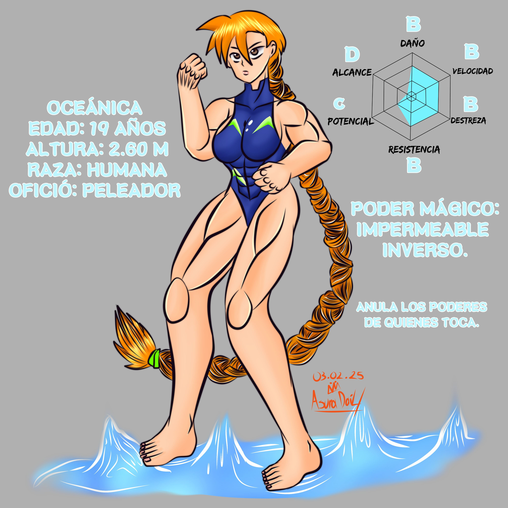
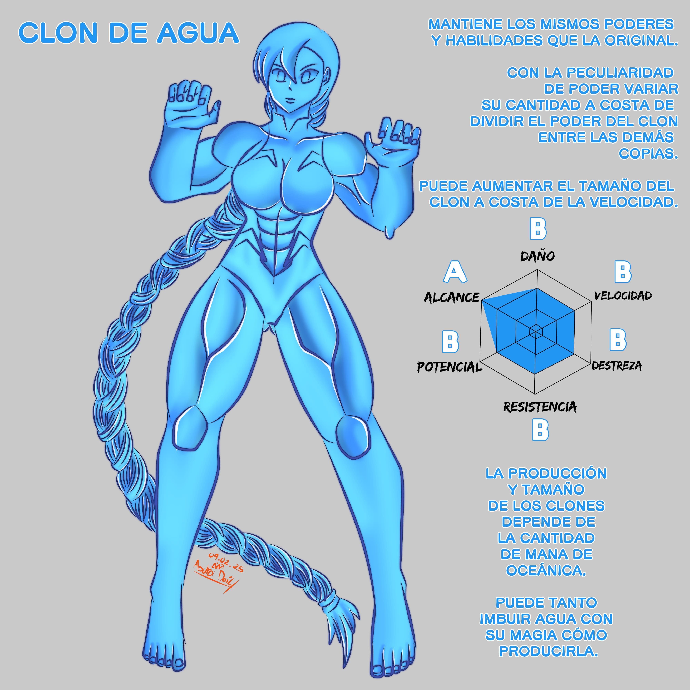

La fanática demoníaca número #1, creció escuchando la leyenda del “Demonio de Zancart” y siguió sus pasos. Se enfrentó al Leviatán en el camino del guerrero y acudió al torneo de los más fuertes en el que escuchó que su ídolo participaba. Se especializa en el combate cuerpo a cuerpo y es capaz de anular los poderes de sus oponentes al mantener sujetarlos podría decirse que en cuanto a Grappling es invencible. Aunque durante el torneo se tendría que enfrentar contra un oponente invisible, una Springnita y a quien más admira. Pertenece a la clase de peleador (La misma que Invicto) lo qué a cambio de no utilizar ningún arma su constitución física y poder mágico se ve potenciado.